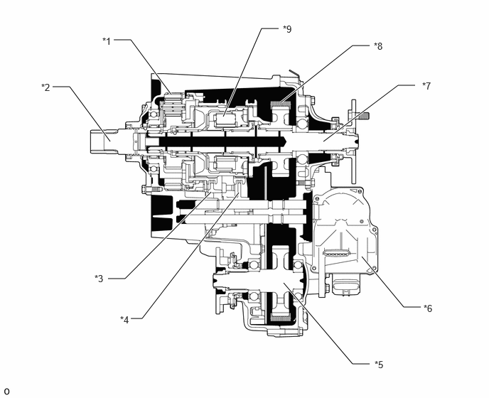

| Last Modified: 10-07-2025 | 6.11:8.1.0 | Doc ID: NM100000002MR9A |
| Model Year Start: 2024 | Model: Tacoma | Prod Date Range: [03/2024 - ] |
| Title: VF4CM (TRANSFER / 4WD / AWD): FOUR WHEEL DRIVE CONTROL SYSTEM: TRANSFER; 2024 - 2026 MY Tacoma Tacoma HV [03/2024 - ] | ||
TRANSFER
CONSTRUCTION
(a) A planetary gear unit is used in the reduction mechanism.
(b) A transfer shift actuator is used to perform motor-operated drive mode switching.
(c) A silent chain (transfer front drive chain) offering both high rigidity and low friction is used for the drive system of the front output shaft, in order to improve quietness and fuel consumption.
(d) A system driven by the planetary carrier in the transfer low planetary gear assembly is used in the oil pump for lubrication inside the transfer assembly. As a result, the rotor is smaller and more efficient and fuel consumption is improved.
(e) The center differential uses a TORSEN* LSD. As a result, this LSD ensures the proper torque distribution during acceleration and high-speed driving.
HINT:
*: TORSEN is a registered trademark of JTEKT Corporation.
|
*1 |
Transfer Low Planetary Gear Assembly |
*2 |
Transfer Input Shaft |
|
*3 |
No. 2 Transfer Gear Shift Fork |
*4 |
No. 1 Transfer Gear Shift Fork |
|
*5 |
Transfer Driven Sprocket |
*6 |
Transfer Shift Actuator Assembly |
|
*7 |
Rear Transfer Output Shaft |
*8 |
Silent Chain (Transfer Front Drive Chain) |
|
*9 |
Center Differential Case |
- |
- |